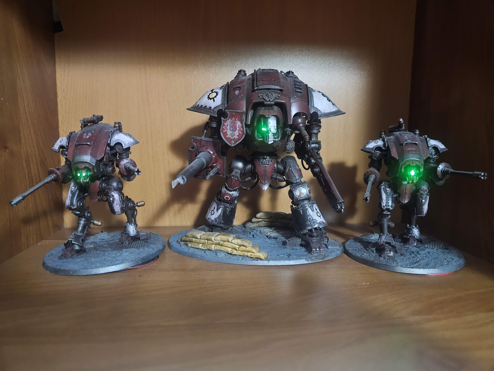
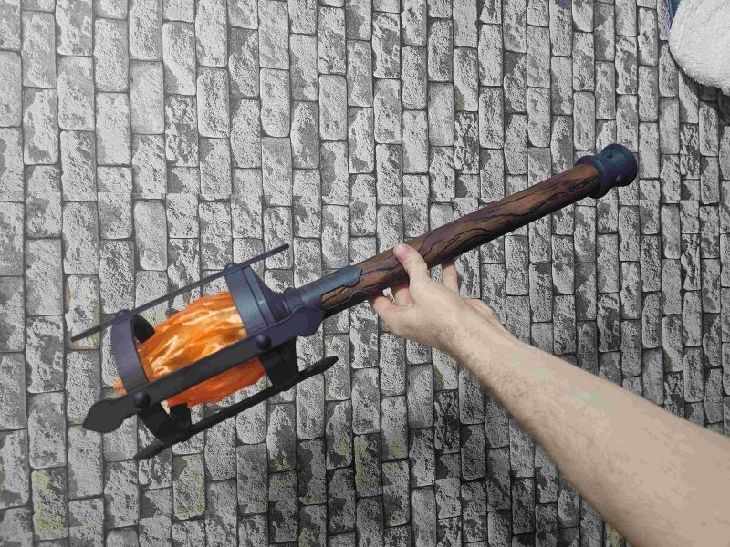

Automatyka • Elektronika • Mikrokontrolery • Druk 3D
Student Automatyki i Robotyki zainteresowany automatyką, elektroniką, systemami wbudowanymi oraz projektowaniem i wykonywaniem własnych urządzeń.

Własnoręcznie pomalowane modele robotów doposażone o elektronikę umożliwiającą symulację działania broni poprzez zapalanie LEDów i odtwarzania odgłosów strzelania
Technologie: Raspberry pi pico, język programowania C, LED, Li-Ion

Projekt przenośnego źródła światła stylizowanego na płonącą pochodnię. Konstrukcja obejmuje układ elektroniczny, zasilanie akumulatorowe, oświetlenie LED oraz elementy wykonane metodą druku 3D. Można je zobaczyć m.i. na stacjonarnych stanowiskach sklepu ozdoby-wikingow.pl
Technologie: elektronika, LED, Li-Ion, druk 3D, CAD, PETG
Czterokanałowy system sterowania oświetleniem LED wykorzystujący mikrokontroler Arduino Nano oraz tranzystory MOSFET.
Oprogramowanie realizuje animacje oświetlenia, płynne przejścia PWM oraz reakcję na sygnały z czujnika.
Technologie: Arduino, C++, PWM, MOSFET, elektronika
Projekt wykorzystujący Raspberry Pi Pico oraz mikrofon I2S INMP441 do analizy sygnału audio i sterowania urządzeniem.
Technologie: RP2040, C/C++, I2S, INMP441, Edge Impulse